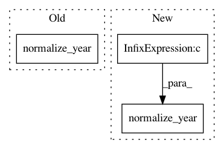

40d42fac8af14dab7b622ca5754cf1d510b2a33f,ner_v2/detectors/temporal/date/en/date_detection.py,DateDetector,_gregorian_month_day_with_ordinals_year_format,#DateDetector#Any#Any#,648
Before Change
yy1 = pattern[1]
yy2 = pattern[4]
dd = pattern[3]
yy = int(self.normalize_year(yy1 or yy2)) or self.now_date.year
probable_mm = pattern[2]
mm = self.__get_month_index(probable_mm)
After Change
yy1 = pattern[1]
yy2 = pattern[4]
dd = pattern[3]
yy = int(self.normalize_year(yy1 or yy2 or self.now_date.year))
probable_mm = pattern[2]
mm = self.__get_month_index(probable_mm)
In pattern: SUPERPATTERN
Frequency: 3
Non-data size: 3
Instances
Project Name: hellohaptik/chatbot_ner
Commit Name: 40d42fac8af14dab7b622ca5754cf1d510b2a33f
Time: 2019-10-01
Author: ruthvik@haptik.co
File Name: ner_v2/detectors/temporal/date/en/date_detection.py
Class Name: DateDetector
Method Name: _gregorian_month_day_with_ordinals_year_format
Project Name: hellohaptik/chatbot_ner
Commit Name: a5b2bf123dc007ae64d853ceb39c6a05fb279a2e
Time: 2019-10-01
Author: ruthvik@haptik.co
File Name: ner_v2/detectors/temporal/date/en/date_detection.py
Class Name: DateDetector
Method Name: _gregorian_month_day_with_ordinals_year_format
Project Name: hellohaptik/chatbot_ner
Commit Name: d1edac9a21a85c10f591b5a02b5d7e594543cdd0
Time: 2019-10-01
Author: ruthvik@haptik.co
File Name: ner_v2/detectors/temporal/date/en/date_detection.py
Class Name: DateDetector
Method Name: _gregorian_month_day_with_ordinals_year_format